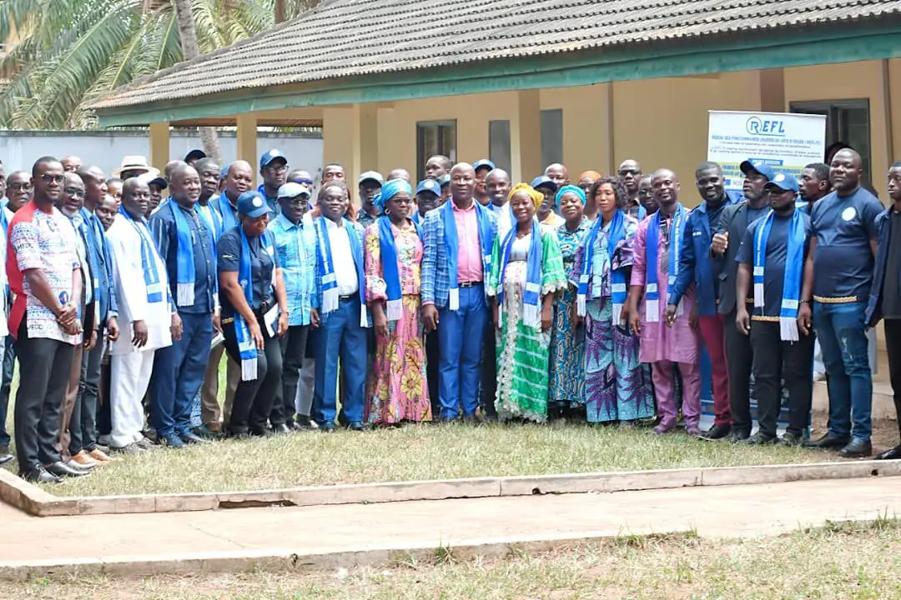

Réunir, former, transformer
Le réseau qui forme les fonctionnaires ivoiriens au leadership, à la prise de parole, au protocole et à la gestion des conflits, pour devenir les leaders de demain.
- Apolitique
- Non syndical
- Né le 20 février 2026
- Parcours en 5 niveaux
Des agents compétents, mais rarement formés à diriger
Les fonctionnaires ivoiriens sont formés dans d’excellentes écoles. Pourtant, au quotidien, beaucoup se heurtent à des difficultés que les formations classiques abordent peu.
- Prendre la parole en public, intervenir en réunion ou lors d’événements officiels.
- Défendre ses idées et ses projets avec clarté, assurance et méthode.
- Gérer les conflits entre collègues ou avec la hiérarchie.
- Maîtriser le protocole administratif, institutionnel et cérémonial.
- Diriger une équipe et conduire le changement.
- Avoir confiance en soi, prendre des initiatives, innover.
Cinq niveaux, de membre à mentor
Chaque membre commence au premier niveau et progresse marche après marche : quatre sessions de formation par an, une année validée pour passer au niveau suivant, un parchemin à chaque étape franchie.
Apprendre à servir et à apporter de la valeur aux autres.
Créer des relations utiles, s’engager et exercer une influence positive.
Passer de la participation à l’action et produire des résultats.
Exceller, transmettre son savoir et faire grandir les autres.
Transmettre, accompagner et pérenniser les valeurs du leadership.
Former, servir, rassembler, distinguer
Formation et renforcement des capacités
Séances de formation, ateliers pratiques et coaching : leadership et management public, prise de parole, gestion des conflits, protocole, développement personnel.
Engagement citoyen et responsabilité sociale
Dons aux orphelinats et aux personnes vulnérables, campagnes de salubrité, rénovation et embellissement d’édifices publics.
Activités sportives et socioculturelles
Des rencontres qui renforcent la fraternité, l’esprit d’équipe et les liens entre fonctionnaires de différentes administrations.
Promotion du mérite et de l’exemplarité
Dîners gala de remise de parchemins et cérémonies de distinction pour valoriser l’engagement et l’excellence.
Une organisation déjà en marche
Le calendrier type d’un bureau régional
Formations, actions citoyennes, activités de cohésion et galas rythment l’année. Les dates précises sont fixées par le Conseil de gestion administrative et les comités régionaux.
- NovembreAssemblée généraleBilan de l’année et élection du nouveau Porte-parole nationalInstances
- DécembrePassation et installationPassation des charges, élection des porte-paroles régionaux et installation des délégationsInstances
- JanvierSession de formation n° 1Prise de fonction du nouveau Porte-parole national et lancement du parcoursFormation
- FévrierAction citoyenne n° 1Salubrité ou solidarité communautaireAction citoyenne
- MarsSession de formation n° 2Approfondissement des modules du niveauFormation
- AvrilAction citoyenne n° 2Dons sociaux ou embellissement d’édifices publicsAction citoyenne
- MaiSession de formation n° 3Formations et coaching spécialisé par niveauFormation
- JuinJournée sportive et culturelle régionaleCohésion entre les membres de la régionCohésion
- JuilletSession de formation n° 4Clôture du cycle annuel de formationFormation
- AoûtJournée sportive nationaleGrand rassemblement de toutes les régionsCohésion
- SeptembreDîner gala de remise de parcheminRemise des parchemins de fin de niveau, dans chaque régionGala
- OctobreAction citoyenne n° 3 et dîner gala du mériteTroisième action citoyenne et dîner gala du mérite et de l’excellenceGala
L’année budgétaire court de janvier à décembre ; le plan d’action, lui, de novembre à octobre.

Chers fonctionnaires,
Le 20 février 2026, à Yamoussoukro, le Réseau des Fonctionnaires Leaders de Côte d’Ivoire est officiellement né. Ce jour-là, des agents publics venus de toutes les administrations ont fait un choix simple et exigeant : ne plus subir nos difficultés, mais nous former pour les surmonter.
Prendre la parole avec assurance, gérer un conflit, maîtriser le protocole, conduire une équipe : ces compétences ne s’apprennent pas toujours dans nos écoles de formation. Le REFL-CI est né pour combler ce manque, dans un cadre apolitique et non syndical, par un parcours progressif qui mène chaque membre du niveau de base jusqu’au mentorat.
Rejoindre le REFL-CI, c’est investir en soi et servir la Nation avec excellence. Je vous invite à franchir le premier pas.
La naissance officielle du réseau
Assemblée générale constitutive et élective, le 20 février 2026 à Yamoussoukro.


Des institutions présentes dès le premier jour
Institutions représentées lors de l’assemblée générale constitutive du 20 février 2026.
- Ministère de la Fonction Publique et de la Modernisation de l’Administration
- FDFP
- Fondation Friedrich Ebert (FES)
- NOE Polytechnique
- MUCREF-CI
Devenez un leader public
Rejoignez un réseau qui forme, encadre et valorise les fonctionnaires engagés pour une administration plus performante.